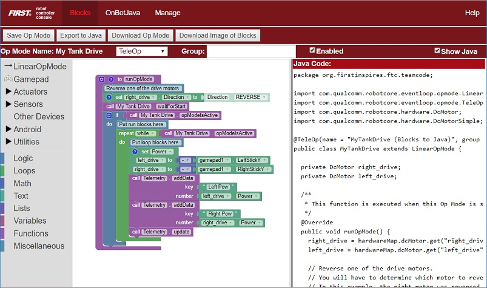

FTC Docs Style Guide
This guide contains the various reStructuredText (RST) and Sphinx specific guidelines for the FTC Docs project. reStructuredText is the default plaintext markup language used by Sphinx. Sphinx is a documentation generator. Sphinx converts reStructuredText files into HTML web pages. Read the Docs is a documentation hosting platform and provides the base Sphinx theme for FTC Docs.
Accessibility
A new emphasis in FTC Docs is to improve the accessibility of FTC Docs. The Americans with Disabilities Act (ADA) is a federal civil rights law that prohibits discrimination against people with disabilities in everyday activities.
What is Web Accessibility
Note
This section is copied from: https://www.w3.org/WAI/fundamentals/accessibility-intro/.
Web accessibility means that websites, tools, and technologies are designed and developed so that people with disabilities can use them. More specifically, people can:
perceive, understand, navigate, and interact with the Web
contribute to the Web
Web accessibility encompasses all disabilities that affect access to the Web, including:
auditory
cognitive
neurological
physical
speech
visual
Web accessibility also benefits people without disabilities, for example:
people using mobile phones, smart watches, smart TVs, and other devices with small screens, different input modes, etc.
older people with changing abilities due to aging
people with “temporary disabilities” such as a broken arm or lost glasses
people with “situational limitations” such as in bright sunlight or in an environment where they cannot listen to audio
people using a slow Internet connection, or who have limited or expensive bandwidth
Web Content Accessibility Guidelines
Web Content Accessibility Guidelines (WCAG) are a set of recommendations for making Web content more accessible, primarily for people with disabilities.
FTC Docs is not completely compliant with WCAG. Our goal to address the Level A success criteria to remove accessibility barriers. Then move to meet the level AA criteria to improve that accessibility. See https://www.w3.org/WAI/WCAG22/quickref/?versions=2.2
The WCAG documents explain how to make web content more accessible to people with disabilities. Web ‘content’ generally refers to the information in a web page or web application,
Please refer to the FTC Docs Accessibility Guidelines section of FTC Docs for how to improve the accessibility of content created for FTC Docs.
The following section provide the WCAG principles that the accessibility guidelines are based on.
Principle 1 – Perceivable
Information and user interface components must be presentable to users in ways they can perceive. For the vision impaired this includes providing text alternative for non-text content like images. It could include Closed captioning which is a form of subtitling, a process of displaying text on a television, video screen, or other visual display to provide additional or interpretive information, where the viewer is given the choice of whether the text is displayed.
Create content that can be presented in different ways (for example simpler layout) without losing information or structure.
Make it easier for users to see and hear content including separating foreground from background.
Principle 2 – Operable
User interface components and navigation must be operable. Make all functionality available from a keyboard. Provide users enough time to read and use content. Do not design content in a way that is known to cause seizures or physical reactions. Example: flashing content. Provide ways to help users navigate, find content, and determine where they are.
Make it easier for users to operate functionality through various inputs beyond keyboard.
Principle 3 – Understandable
Information and the operation of the user interface must be understandable. Make text content readable and understandable. Make Web pages appear and operate in predictable ways.
Principle 4 – Robust
Content must be robust enough that it can be interpreted by a wide variety of user agents, including assistive technologies. Help users avoid and correct mistakes.
This success criterion is primarily for Web authors who develop or script their own user interface components. For example, standard HTML controls already meet this success criterion when used according to specification.
reStructuredText Documents
Example Document
Title
=====
This is an example article.
This is a paragraph.
Here is some code:
.. code:: java
System.out.println("Hello World");
This is how to include an image:
.. image:: images/BlocksPicture1.jpg
:alt: Blocks Programming Tool showing a graphical Blocks program.
This is how to include an image with caption:
.. figure:: images/examplemulticolorplates.png
:alt: 6 multicolor square 3d printed logos.
This FTC Team printed their sponsors logos in multiple colors to represent them!
Section
-------
This is a section!
Sub-section
^^^^^^^^^^^
This is a sub-section!
Note
If you are having issues editing files with the .rst extension, the recommended text editor is VS Code with the
reStructuredText extension.
Document Filenames
This is for the files that make up the pages of FTC Docs.
Use only lowercase alphanumeric characters and - (minus) symbol in the file name. Example: style-guide.rst
For documents that will have an identical software/hardware name, append “-hardware” or “-software” to the end of the document name. example: ultrasonics-hardware.rst
Suffix filenames with the .rst extension.
Titles and Headings
Attention
We should also mention things related to document structure and how we want FTC Docs headings.
Text
Attention
talk about FTC Docs text, paragraphs, lists, tables, admonitions etc. This is where we just have guidelines and don’t repeat info in the tutorials or reference guide. Example: we can encourage use of the list style of RST table and avoid the ascii box style of table. Also talk about plain language: https://evolvingweb.com/blog/plain-language-guide-how-write-inclusive-digital-content-2024
Links
Effective link text:
Avoid link text such as “click here” or “learn more.” These call-to-actions do not provide any relevant information to someone using a screen reader.
Links should be unique and describe where it takes you. If you have multiple links that look or sound similar (but point to different sections), use different words for each link.
Links to files (e.g. Microsoft Word, PDF, etc.) should also indicate the file type or destination within the link text.
Avoid linking long URLs. Longer, less intelligible URLs used as link text might be difficult to comprehend with assistive technology.
Links should be clear and concise. Avoid linking entire sentences or paragraphs.
Tip
See this guide on writing hyperlinks for more information.
Internal Links
Internal Links will be auto-generated based on the ReStructuredText filename and section title. For example, here are several ways to link to sections and documents.
Use this format to reference a section of the same document:
`Images`_Note the single underscore. This renders to the link Images which is a section further down in this document.Use this format to reference the top-level of a document. You can use relative paths
:doc:`image-and-figure-details`renders to Image and Figure Details. Or to use absolute paths, put a forward slash at the beginning of the path:doc:`/apriltag/vision_portal/visionportal_webcams/visionportal-webcams`renders to Webcams for Vision Portal. Note that the link text rendered is the main section title of the target page regardless of the target filename.
The general way to reference a section in another document is to add a label in front of the section in that other document. Note the leading underscore and trailing colon that surround the label. The label must be unique across all of FTC Docs. You can also reference a Figure with the label method.
.. _imu axes def:
Axes Definition
---------------
Then you reference the label by using :ref: and surrounding the label with back ticks as follows:
partial sentence including :ref:`imu axes def`
another reference to :ref:`IMU or robot axes <imu axes def>`
The second :ref: shows a format that lets you specify the link text, otherwise the section heading is used for the link text. This looks like the following:
partial sentence including Axes Definition |
This shows the section heading. |
another reference to IMU or robot axes |
This shows custom link text. |
When using :ref: or :doc: you may customize the displayed text by surrounding the actual link with angle brackets <> and adding the custom text between the first backtick ` and the first angle bracket <, leaving a space between the text and bracket.
For example :ref:`RC Overview <control_hard_compon/rc_components/index:Robot Controller Overview>` renders to RC Overview.
This is a link to the Robot Controller Overview section of the index in the rc_components folder.
External Links
Links to other websites and even to the main FIRST Inspires site are call external links. It’s possible to create a link by entering the URL in the text https://www.firstinspires.org/resource-library/ftc/game-and-season-info. Sphinx will build a link when it encounters a URL. But that is not the preferred approach.
Use descriptive link text rather than just embedding a URL. Use the following RST syntax:
`Game and Season Materials <https://www.firstinspires.org/resource-library/ftc/game-and-season-info>`_
Which looks like: Game and Season Materials
FTC Docs has chosen to open links to external sites in new tabs. This is done with Javascript. We mitigate this somewhat by adding an icon that indicates the link is to an external site and add screen reader only text.
Links to Files
You can directly link to files such as a PDF, but that is an accessibility problem. The issue is the context switch from web browsing to suddenly having to deal with a PDF that has probably opened in a new tab/window without any warning. FTC Docs contains quite a few links to PDFs that should be make more accessible.
The recommended approach to linking to files is to include in the link a warning that the link is actually a file, the file type, and if possible the file size. Ideally that information is in text and included in the link text portion of the link so that a screen reader would read that information and let the user decide if they want to follow the link.
Simple example of a link to a PDF.
RST Code:
`Field Setup Guide (PDF) <https://ftc-resources.firstinspires.org/ftc/field/eventfieldguide>`__
Which looks like:
Generally in FTC Docs we link to file to enable them to be downloaded for printing or offline viewing. In that case, the user is downloading the file, which is an action, so a button is appropriate. Buttons are appropriate user interface components for user actions. Using a button as a link will visually distinguish a file link from a regular link.
The following RST example show a sentence that precedes the button to give context. We include the document name as screen readers and keyboard only users might tab to the link so we need to indicate in the link what file will be downloadable.
Use the following button link to download a PDF of the Field Setup Guide from the *FIRST* Website:
.. button-link:: https://ftc-resources.firstinspires.org/file/ftc/game/fieldguide
:color: primary
Download Field Setup Guide PDF, 4.5 MB
This looks like:
Use the following button link to download a PDF of the Field Setup Guide from the FIRST Website: |
The preferred approach when linking to files is to create what is called a gateway page. The gateway page would describes the file, perhaps giving a summary of the content. This lets the reader decide if it’s worth taking the trouble to view or download the file. Ideally, all references to the file elsewhere on the website link to the gateway page which then links to the file.
External reference: https://www.nngroup.com/articles/gateway-pages-prevent-pdf-shock/
Here’s a gateway page example for the Field Setup Guide PDF.
The Field Setup Guide has the official instructions for assembling and setting up a FIRST Tech Challenge field. Typically there are assembly instructions that build structures that then have setup instructions for placing on the field. There are also teardown instructions that indicate how to take apart the field for storage or transport. The guide typically has the following sections:
Use the following button link to download a PDF of the Field Setup Guide from the FIRST Website: |
Images
Images usually support the text on a page. They provide visual reinforcement. Sometimes an image is the primary source of meaning for the content. It’s hard to talk about AprilTags without images of what an AprilTag looks like.
For FTC Docs, please don’t add Decorative Images that are just for visual presentation. Images should relate to the content of the page.
See Image Files for file formats, size, and where to place images the FTC Docs folders.
Simple Images
Use the following .. image directive when the image does not require a visible text caption.
For accessibility, please add an :alt: option to the image directive with a functional description of the image.
This description will not be visible on a web page or PDF, but will be spoken out loud by
screen reader software.
.. image:: images/BlocksPicture1.jpg
:alt: Blocks Programming Tool showing a graphical Blocks program.
The :alt: line is indented three spaces.
The description should be functional. Describe the image for someone who cannot see it.
Here’s what the web page for an image looks like (but reduced in size for this example). The image is a screen shot of the Blocks programming tool on a page that talks about the various programming tools available.
|  |
The alt text reads Blocks Programming Tool showing a graphical Blocks program. The alt text is not visible in HTML or PDF, but would be spoken aloud by screen reading software. Alt text is displayed in the browser if the image failed to load or the user had selected to not load images because they are on a low bandwidth internet connection.
FTC Docs has many diagrams. Some are simple like this one for a control system diagram on a page that introduces the control system.

|
The alt text reads Two gamepads are connected to a phone, the phone is connected by WiFi Direct to another phone on the robot.
FTC Docs also has photographs. These also need alt text to describe the image. This next example is on a page discussing hardware tradeoffs including stiff and flexible printer beds.
The alt text reads An image showing how flexible beds peel off of the bed.
Alt Text Guidelines
Keep it short. Alt text shouldn’t be much longer than around 150 characters.
Do not include words like ‘image’ or ‘photo’ at the beginning.
End alt text with a period, even if it isn’t a full sentence. The period ensures that the screen reader pauses after reading the alt text.
Front load alt text with the most important words, to help users make a quick and informed decision about whether it’s worth listening to the rest of the alt text before moving on.
Always include an alt attribute. Otherwise, screen readers might announce the image file name.
Avoid technical jargon and abbreviations unless users are certain to understand them.
If you need more than a sentence or two to describe the image, see Complex Images.
Tip
For assistance with alt text descriptions, see Alt Text.
Important
If you are editting an existing page that has an .. image or .. figure directive with no :alt: option,
please take a moment to add the :alt: option with a functional description of the image.
Images With Captions
Use the ..figure directive when the image requires a visible text caption.
Sphinx place the caption text below the image. The caption text is in italic font.
Photo credits are an example of when you need a caption. You should also use a caption when you need editorial or illustrative text to highlight something about the image to the reader or to connect the image to the surrounding text content. This could include the who, what, when, where, and/or why of an image. You might draw the readers attention to some detail of the image, or what is important in the image. Captions can be longer than one line if needed, but should generally be kept short.
Please create alt text even though there is a caption. The alt text and caption should be different because a screen reader will read both. One way to think about this is the alt text should be functional and the caption should editorial or illustrative.
Do not add the word “Figure” to the caption, or “Figure 1”, etc. The PDF writer will automatically add “Fig.” and a number to all captions.
If you need to reference the figure in the text of the page, use the leading text of the caption if possible, or some unique short identifier or description of the image. Try not to reference the figure by position (such as “see the image above”) as visually impaired persons cannot see the position. Also, the PDF writer might move the figure out of context with the surrounding text.
The following example is on a page about 3D printed parts in a section about Robot Aesthetics.
.. figure:: images/examplemulticolorplates.png
:alt: 6 multicolor square 3d printed logos.
This FTC Team printed their sponsors logos in multiple colors to represent them!
Note that :alt: and caption are both indented 3 spaces.
A blank line is required between :alt: and the caption.
Here’s what this looks like (with image reduced in size for this example).

This FTC Team printed their sponsors logos in multiple colors to represent them! |
The alt text for the image reads 6 multicolor square 3d printed logos.
This is a good example of a functional alt text description for a screen reader followed by an editorial caption that is visible.
Complex Images
To make images accessible for the visually impaired, we need to provide a text description of the image. For complex images, you might need a whole paragraph to describe the image. Alt text is not supposed to be more than a sentence or two, we need to provide something short in the alt text knowing that a long description follows.
To include a complex image use the figure directive.
Set the :alt: text to a short functional description, perhaps a summary of the long description.
Set the caption to be an editorial or illustrative comment on the image.
See the guidance about alt text and captions in the preceding section.
The long description is then added as a paragraph after the caption in the figure directive.
Try to adjust the alt text, caption, and long description so that the text flows such that it would make sense if read aloud by a screen reader.
In the following reStructuredText source example the figure directive has alt text, followed by a one line caption. A descriptive paragraph is added after the caption. It is indented the same as the caption. There is a blank line before and after the caption.
.. figure:: images/into-the-deep-field.png
:alt: A square field with X, Y and Z axes shown.
The Cascade Effect game field
In a square field configuration the two Alliances face each other across the field.
The field is oriented such that the Red Wall is on the right as seen
from the audience, and the blue wall will be on the left.
The Y axis points across the field from the Red Wall to the blue wall.
The X axis points away from the audience to the rear of the field.
Here’s what a complex image looks like (with image reduced in size for this example).
Into The Deep game field In a square field configuration the two Alliances face each other across the field. The field is oriented such that the Red Wall is on the right as seen from the audience, and the blue wall will be on the left. The Y axis points across the field from the Red Wall to the blue wall. The X axis points away from the audience to the rear of the field. |
The alt text for the example image reads A square field with X, Y and Z axes shown. This is a short functional description that a screen reader would say.
The caption is an editorial comment that this field is from the Cascade Effect game. It is not the same as the alt text.
The paragraph after the caption completely describes the image for those who cannot see it. A complete text description is also important for those persons who have trouble processing or understanding visual information. It can help them understand the image they are seeing.
For another example of a complex image see Complex Image Example.
Image Files
Image files should be stored in an images sub directory in the folder of the current document.
This allows the document to reference the image as follows: .. image:: images/my-image.png.
Example: The document field-coordinate-system.rst is in the game_specific_resources\field_coordinate_system folder. The images for that page are stored in the folder game_specific_resources\field_coordinate_system\images.
Image file names should follow the naming scheme of short-description.ext, where the name of the image is a short description of what the image shows. This should be less than 24 characters. File name extensions should be .png or .jpg.
Image file formats should be Portable Network Graphics(PNG) or Joint Photographic Experts Group(JPEG).
Warning
Images with the extension .gif and .svg are not supported in PDF format.
Images (including vector graphics) should be less than 500 kilobytes in size and no more than 1000 pixels in width. Please make use of a smaller resolution and more efficient compression algorithms. This facilitates reasonable web page loading for those with slow internet connections. Our HTML documents have a maximum width of 1000 pixels for desktop browsing so image width should be 1000 pixels or less.
An exception to image size is images like the control system diagrams in the Robot Controller Overview. Those diagrams are over 2500 pixels wide and greater than 500kb in size. However, that extra resolution is required to properly view the details of all the components and the connections. If those were reduced in resolution, or too heavily compressed as a jpg, relevant details might be lost or hard to see.